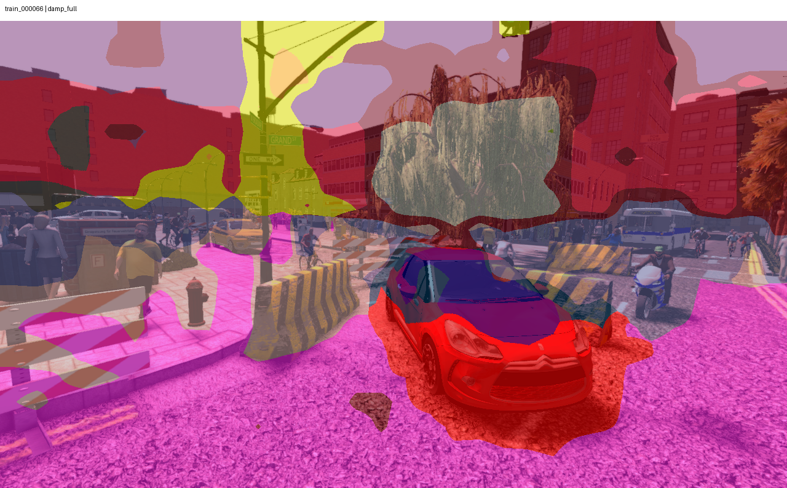

DAMP Segmentation Demo
Cached low-resource SYNTHIA to Cityscapes pipeline playback. The heavy model run is precomputed; this page visualizes the final DAMP output for recording.
Final DAMP Output
Backbone: CLIP ViT-B/16
Output hidden
Run the cached pipeline to reveal the generated pseudo-mask overlay.
Run the cached pipeline to reveal the generated pseudo-mask overlay.

Zero-shot mIoU
0.1310
DAMP Prompt-only mIoU
0.1316
DAMP Full mIoU
0.1302